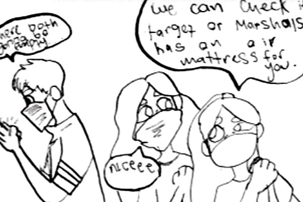

Slice of Life
3 pages • Switch narrator POV • 12-16 hours

Overview
Write, draw, and letter three pages of comics continuity. Base your story on a personal event, either directly experienced or witnessed. Focus on personal details unique to you. Consider not being the protagonist.
Why this assignment exists
For working adults: Personal narrative is the most accessible entry point into comics writing — you already have the material. The POV switch teaches you to see any story from multiple angles, a skill that translates directly to writing characters who feel real rather than convenient.
For portfolio builders: Autobiographical and slice-of-life work is a recognized genre with a strong editorial market. More importantly, writing from personal experience lets your individual voice emerge — the thing editors and publishers remember long after they've forgotten the artwork.
What you'll learn
- Writing from personal experience
- Shifting narrator point of view
- Visual storytelling with period-accurate details
- Using fashion, technology, and pop culture as visual context
- Hand lettering style and placement
- Full pipeline from story development through production
Workflow
Phase 1: Story development
Come up with an anecdote you'd tell at a party, with yourself as the protagonist. After instructor and class feedback, retell that same story from another character's point of view. Example: if something happened to you at age six, imagine that same story through the eyes of someone else who was there.
- Identify your anecdote
- Write it with yourself as protagonist
- Present to class for feedback
- Identify alternate POV character
- Rewrite from their perspective
- Get instructor sign-off before proceeding
Phase 2: Visual research and thumbnails
Gather visual and historical reference to support your story. Pay attention to relevant fashion, technology, and pop culture details that ground the reader in your world.
- Research period fashion and technology
- Gather visual reference for settings
- Thumbnail all three pages
- Get instructor sign-off before proceeding
Phase 3: Pencil art and lettering
Upon instructor feedback and sign-off, proceed to drawing on production paper. All research and tweaking should stop now. Focus on visual narrative, storytelling, camera angles, lettering style, and placement.
- Transfer thumbnails to production paper
- Pencil all figures and backgrounds
- Hand letter all dialogue and captions
- Check balloon placement and reader flow
- Get instructor sign-off before proceeding
Phase 4: Inking
Upon instructor feedback and sign-off, proceed to getting your final art ready for production!
- Ink all figures and backgrounds
- Ink borders and panel gutters
- Clean up and erase pencil lines
- Get instructor sign-off before proceeding
Phase 5: Production
Upon instructor feedback and sign-off, proceed to format your pages per these Photoshop production instructions.
- Scan all pages at correct resolution
- Follow Photoshop production instructions
- Export final files in required format
- Receive instructor sign-off
Requirements
- Minimum page count: 3
- Art dimensions: 10 x 15 inches
- Lettering: By hand
- Ames guide: 3.5 scale, two-thirds ratio
Common challenges
- Staying as protagonist: The POV switch is the assignment — students who resist it miss the most valuable part of the exercise.
- Vague personal details: Generic details flatten the story. Specific, idiosyncratic observations are what make slice-of-life work memorable.
- Skipping research: Period-accurate details — the right phone, the right sneakers — signal to the reader that this world is real.
Related resources
- Slice of life examples
- Harvey Pekar examples
- Original art dimensions
- Hand lettering tutorial
- Ames guide demo
- Next assignments
-
- Genre, Line, Character, Prop
- 3 pages combining assigned prompts
-
- Full Script
- 3 pages drawn from a provided script